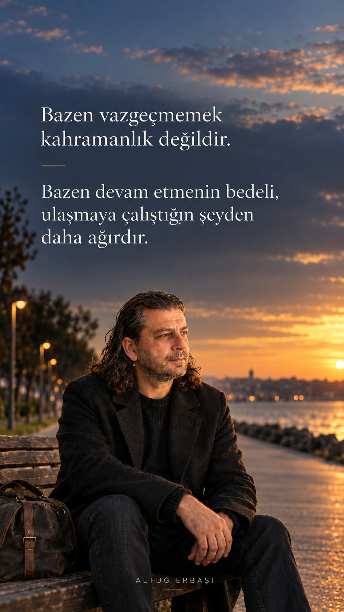

Bize çocukluğumuzdan beri vazgeçmemenin erdem olduğu anlatılır. Oysa bazen ısrar etmek bizi hedefimize değil, kendimizden uzaklaşmaya götürür. Peki mücadele etmekle kendinden vazgeçmek arasındaki çizgiyi nasıl fark ederiz? Belki de asıl cesaret, ne zaman devam edeceğimizi değil, ne zaman duracağımızı bilmektir.
Bir maraton koşucusu düşünün. Yarışın son 250 metresinde sakatlanıyor. Bitiş çizgisi artık gözünün önünde. Durursa yıllardır hazırlandığı yarışı kaybedecek. Devam ederse bedenine kalıcı zarar verme ihtimali var.
Ne yapmalı?
Çoğumuzun öğrendiği cevap oldukça tanıdık: Devam et.
Çünkü vazgeçmemek güçlü insanların özelliğidir. Sonuna kadar mücadele etmek karakter göstergesidir. Biraz daha dayanırsak başaracağız. Başladığımız işi bitirmeliyiz.
Peki ya devam etmenin bedeli, ulaşmaya çalıştığımız şeyden daha ağırsa?
Bu soru yakın zamanda yaptığım bir seansta karşımıza çıktı. Hikâyedeki koşucunun kim olduğundan çok, sorunun kendisi değerliydi. Çünkü bazı yarışlarda bitiş çizgisine ulaşmak, yarışı kazanmak anlamına gelmeyebilir.
Israr neden bu kadar değerli?
Psikolojide buna yakın önemli kavramlardan biri sunk cost, yani batık maliyet etkisidir. Geçmişte bir şeye ne kadar fazla zaman, emek, para veya duygu yatırdıysak, artık bize iyi gelmese bile onu bırakmak o kadar zorlaşabilir.
Davranışsal ekonominin öncülerinden Richard Thaler'ın çalışmalarında ele aldığı bu etki, kararlarımızı yalnızca gelecekte elde edebileceklerimize göre vermediğimizi gösterir. Geçmişte ödediklerimizi de hesaba katarız. Oysa geçmişte harcanmış olan emek geri gelmeyecektir.
Bu yalnızca para için geçerli değil.
Bir mesleğe yirmi yıl vermiş olabiliriz. Yıllardır yürüttüğümüz bir projeye aylarımızı harcamış olabiliriz. Bir ilişkiye yıllarımızı, hayallerimizi ve sevgimizi yatırmış olabiliriz.
Tam da bu nedenle “Buraya kadar geldim” cümlesi bazen tehlikeli olabilir.
Çünkü arkasından kolaylıkla şu gelir:
“Biraz daha dayanmalıyım.”
Ben de uzun süre böyle düşündüm
Kendi hayatımda bunu en belirgin gördüğüm yerlerden biri ilişkiler oldu.
Bir ilişkiyi sürdürebilmek için daha çok anlamaya, daha doğru konuşmaya, daha sabırlı olmaya ve sorunları çözmeye çalıştığım dönemler oldu. Üstelik bunların her biri tek başına oldukça sağlıklı davranışlar.
Sorun başka bir yerde başlıyor.
Bir gün insan kendisine şunu sorabiliyor:
“Ben bu ilişkiyi iyileştirmeye mi çalışıyorum, yoksa ilişki devam etsin diye kendimden mi vazgeçiyorum?”
Benim için önemli farkındalıklardan biri buydu.
Çünkü mücadele etmek ile sürekli mücadele etmek zorunda kalmak aynı şey değil. Bir ilişkide emek vermek ile ilişkinin bütün yükünü taşımak da aynı şey değil.
Ve belki daha önemlisi: Birini sevmek ile o ilişki içinde kendini kaybetmek pahasına kalmak hiç aynı şey değil.
Beden bazen bizden önce fark ediyor
Uzun süreli belirsizlik ve stres yalnızca zihinsel bir deneyim değil. Amerikan Psikoloji Derneği, kronik stresin kas-iskelet sisteminden kardiyovasküler sisteme, sindirimden uykuya kadar birçok bedensel sistemi etkileyebildiğini belirtiyor.
Bunu bilmek başka, kendi bedeninde görmek başka.
Ben de bazı dönemlerde sürekli tetikte olmanın, anlamaya ve kontrol etmeye çalışmanın bedensel karşılığını yaşadım. Zihnim hâlâ “çözebilirim” derken bedenimin başka bir şey söylediğini fark ettiğim zamanlar oldu. Tansiyonum sürekli 18-22 arasında geziniyordu.
Bugün geriye baktığımda bunu önemli bir işaret olarak görüyorum.
Çünkü bazen kendimize sormamız gereken soru yalnızca “Bunu başarabilir miyim?” değildir.
“Bunu başarmaya çalışırken bana ne oluyor?” sorusu da en az onun kadar değerlidir.
Durmak da aktif bir seçimdir
Vazgeçmek kelimesinin Türkçede bile yenilgi çağrışımı var.
Oysa her bırakış vazgeçiş değildir.
Bazen bir stratejiyi bırakıp hedefi koruruz. Bazen bir işi bırakıp sağlığımızı koruruz. Bazen bir ilişkiyi bırakıp sevme kapasitemizi değil, kendimizi koruruz.
Bu ayrımı yapabilmek için kendimize üç basit soru sorabiliriz:
- Burada kalmamın nedeni hâlâ istediğim şey mi, yoksa şimdiye kadar verdiğim emek mi?
- Devam edersem kazanabileceğim şey kadar, kaybedebileceğim şeyi de hesaba katıyor muyum?
- Bu mücadele beni olmak istediğim insana yaklaştırıyor mu, yoksa ondan uzaklaştırıyor mu?
Bu soruların amacı ilk zorlukta vazgeçmek değil. Tam tersine, neyin uğruna mücadele ettiğimizi bilinçli seçebilmek.
Son 250 metre
Seanstan çıktığımdan beri o koşucuyu düşünüyorum.
Belki hayatımızdaki en zor kararlardan bazıları yarışın başında verilmiyor. Çünkü başlangıçta bırakmak kolaydır. Asıl zor olan, bitiş çizgisini görebildiğimiz halde durabilmek.
Yıllarımızı verdiğimiz bir şeyin artık bize iyi gelmediğini kabul etmek…
“Bu kadar emek verdim” yerine “Bundan sonra neye emek vermek istiyorum?” diye sorabilmek…
Ve gerektiğinde yön değiştirmek.
Bugün vazgeçmek kavramına biraz daha farklı bakıyorum.
Güç her zaman dişlerimizi sıkıp son 250 metreyi koşmak olmayabilir.
Bazen güç, yarışı kazanabilecek olsak bile ödeyeceğimiz bedeli fark edip durabilmektir.
Çünkü bazen vazgeçmemek kahramanlık değildir. Bazen devam etmenin bedeli, ulaşmaya çalıştığımız şeyden daha ağırdır.
